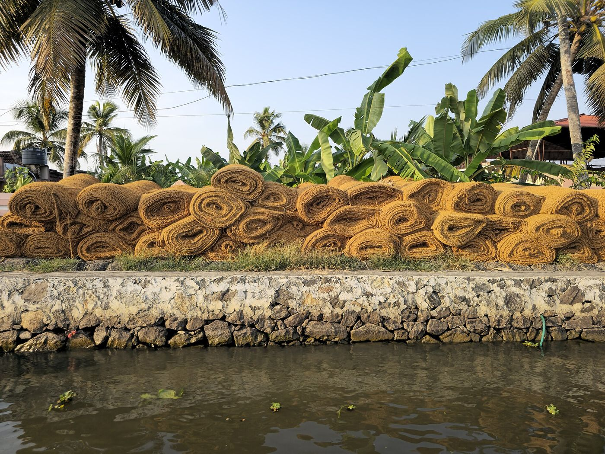
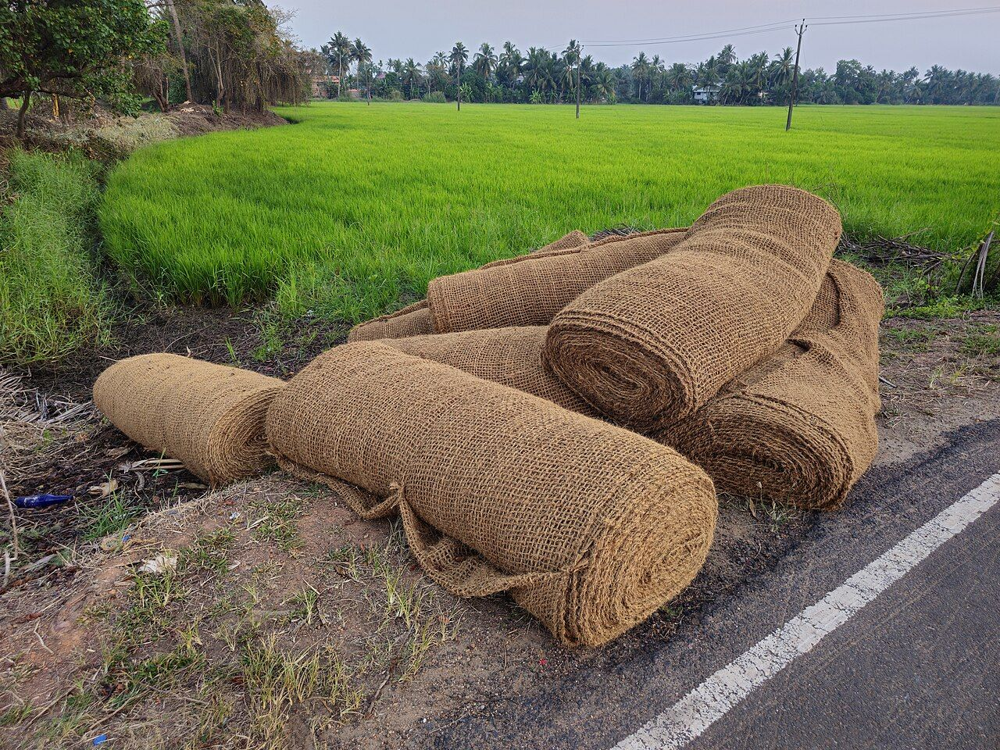
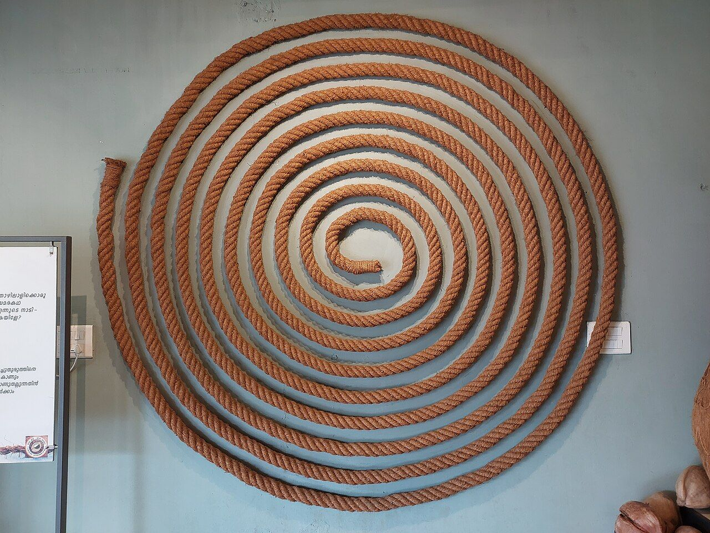
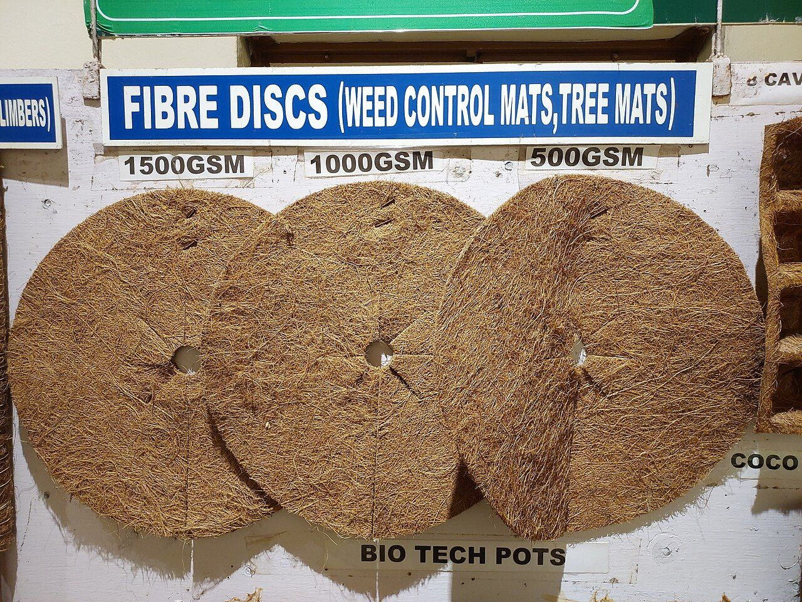

Coir Geotextiles & Erosion Control Mesh.
Heavy-duty woven coconut fibre geotextiles, coir logs, and soil erosion control blankets engineered for slope stabilization, highway embankments, and commercial riverbank restoration.

⛰️Erosion controlSlopes, banks & channels
Woven coir mesh
Open woven mesh formats for selected slope and soil-surface applications.

Erosion-control logs
Fibre log formats for project-specific sediment and runoff management.

Open-weave mats
Weed-prevention and vegetation-support formats for suitable landscape sites.
Specify for the site, not just the material.
A useful technical review considers slope gradient, soil type, rainfall exposure, vegetation plan, anchoring method and expected project life.
Bank, slope, channel, landscaping or nursery requirement.
Roll width and length, mass per area, weave and edge finish.
Site preparation, overlap, trenching, anchoring and maintenance.
| Specification | Project data to request |
|---|---|
| GSM | Exact SKU value and tolerance |
| Tensile strength | Value, direction and test method |
| Water absorption | Test method and conditioning |
| Roll size | Width, length and coverage area |
| Biodegradation | Conditions, method and supporting evidence |
No technical performance values are published here because they must be verified against the exact product and test documentation.